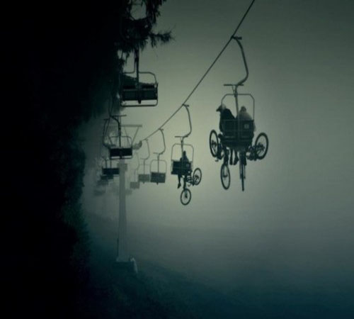

Projets
Sorties
Les sorties de vélo sont annoncées régulièrement sur cette page. Prenez l' habitude de venir voir ce qui se prépare.
"All dressed"
Nous affichons les projets sportifs connexes au vélo tel que: la course à pied, le biathlon, le triathlon, le ski de fond, la raquette, etc...
